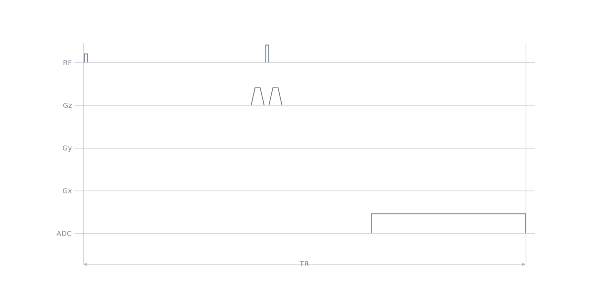
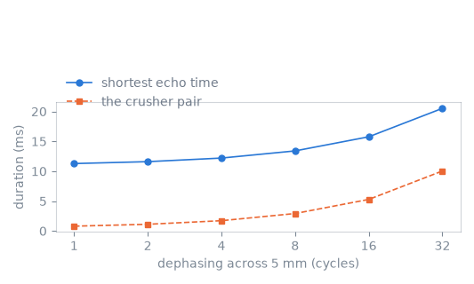

Note
Go to the end to download the full example code.
Spin echo#
The previous lesson acquired a free induction decay directly after the excitation. This lesson adds a refocusing pulse, so that the acquisition is centred on a spin echo at a prescribed echo time, and a pair of crusher gradients about the refocusing pulse. The crushers leave the spin-echo pathway rephased and dephase the coherence pathways the pulse does not refocus, such as the free induction decay an imperfect refocusing pulse produces.
The echo time is defined between pulse centres rather than between block edges, and the crusher pair has to fit within it. The last section measures the resulting relationship: the shortest echo time the system limits allow, against the dephasing prescribed for the crushers.
The representation these objects belong to is described in Events and blocks.
Learning objectives#
After this lesson, you should be able to:
create a refocusing pulse and tag its RF use;
prescribe a crusher gradient by its dephasing across a voxel;
compute the delay blocks that place the refocusing pulse centre at \(\mathrm{TE}/2\) and the acquisition centre at \(\mathrm{TE}\), on the block duration raster;
read the pulse centres back from the k-space analysis;
relate the shortest echo time to the crusher dephasing.
Prescription#
A crusher is prescribed as the phase it winds across a voxel, because that is what decides whether a pathway survives the acquisition: an area \(A\) turns the magnetisation through \(A\,\Delta x\) cycles across an extent \(\Delta x\), and a pathway wound through several cycles across a voxel integrates to nothing over it.
import numpy as np
import pypulseqpp as pp
system = pp.Opts(
max_grad=32.0,
grad_unit="mT/m",
max_slew=130.0,
slew_unit="T/m/s",
rf_dead_time=100e-6,
rf_ringdown_time=20e-6,
adc_dead_time=10e-6,
)
ECHO_TIME = 24e-3
VOXEL = 5e-3
CRUSHER_CYCLES = 4.0
The refocusing pulse#
The second pulse is rectangular like the first and of the same duration, so
twice the flip angle is twice the amplitude. The use tag is what the
k-space analysis reads to invert the accumulated gradient integral at the
pulse’s centre, and what an interpreter reads to identify it.
excitation = pp.make_block_pulse(
flip_angle=np.pi / 2,
duration=200e-6,
delay=system.rf_dead_time,
system=system,
use="excitation",
)
refocusing = pp.make_block_pulse(
flip_angle=np.pi,
duration=200e-6,
delay=system.rf_dead_time,
system=system,
use="refocusing",
)
print(
f"peak B1: excitation {abs(excitation.signal).max():.0f} Hz, "
f"refocusing {abs(refocusing.signal).max():.0f} Hz"
)
peak B1: excitation 1250 Hz, refocusing 2500 Hz
Crushers about the refocusing pulse#
Two gradients of equal area and equal polarity, one before the refocusing
pulse and one after it. The refocused pathway has its accumulated gradient
integral inverted by the pulse, so the second crusher unwinds what the first
wound. A pathway that crosses the pulse without that inversion, such as the
free induction decay a refocusing pulse of imperfect flip angle produces, sees
the two areas add, and is left wound through CRUSHER_CYCLES cycles across
a voxel.
make_crusher() takes the dephasing and the voxel rather
than an area, and solves the shortest gradient that delivers it against the
amplitude and slew limits.
crusher = pp.make_crusher(CRUSHER_CYCLES, VOXEL, channel="z", system=system)[0]
print(
f"crusher: {1e3 * pp.calc_duration(crusher):.2f} ms for "
f"{CRUSHER_CYCLES:.0f} cycles across {1e3 * VOXEL:.0f} mm"
)
crusher: 0.86 ms for 4 cycles across 5 mm
Timing the echo#
The delays are computed from the centre of each pulse. A block longer than
the events in it is a delay, and the two delays below absorb whatever the
pulses, their dead and ringdown times and the crushers do not occupy. Each is
put on the block duration raster with round_to_raster(): a
duration that is not on it is rounded up when the block is added, which would
move the echo by as much as one raster period. The rasters are described in
Timing and rasterization.
SAMPLES = 512
dwell, acquisition = pp.calc_adc_timing(
SAMPLES,
20e-6,
grad_raster_time=system.grad_raster_time,
adc_raster_time=system.adc_raster_time,
)
adc = pp.make_adc(
num_samples=SAMPLES, dwell=dwell, delay=system.adc_dead_time, system=system
)
print(
f"dwell {dwell * 1e6:.0f} us, acquisition {acquisition * 1e3:.2f} ms, "
f"half of it {acquisition * 5e2:.2f} ms"
)
def centre(pulse):
"""Time from the start of a block to the centre of the pulse in it."""
return pulse.delay + pulse.shape_dur / 2
def spin_echo(echo_time, crusher_event):
"""One repetition of the spin echo, at the given echo time."""
first, second = _delays(echo_time, crusher_event)
seq = pp.Sequence(system=system)
seq.add_block(excitation)
seq.add_block(pp.make_delay(first))
seq.add_block(crusher_event)
seq.add_block(refocusing)
seq.add_block(crusher_event)
seq.add_block(pp.make_delay(second))
seq.add_block(adc)
return seq
def _delays(echo_time, crusher_event):
"""What the two delay blocks have to absorb, on either side of the pulse."""
crusher_duration = pp.calc_duration(crusher_event)
before = (
pp.calc_duration(excitation)
- centre(excitation)
+ crusher_duration
+ centre(refocusing)
)
# The acquisition is centred on the echo, so what has to fit after the
# refocusing pulse is the dead time and half the acquisition window.
after = (
pp.calc_duration(refocusing)
- centre(refocusing)
+ crusher_duration
+ system.adc_dead_time
+ acquisition / 2
)
raster = system.block_duration_raster
return (
pp.round_to_raster(echo_time / 2 - before, raster),
pp.round_to_raster(echo_time / 2 - after, raster),
)
seq = spin_echo(ECHO_TIME, crusher)
ok, errors = seq.check_timing()
print(f"timing {ok}, {seq.num_blocks} blocks, {1e3 * seq.duration()[0]:.2f} ms")
dwell 20 us, acquisition 10.24 ms, half of it 5.12 ms
timing True, 7 blocks, 29.34 ms
The centres the k-space analysis reports are what the prescription is read back from: the refocusing pulse at half the echo time after the excitation, and the midpoint of the acquisition window at the echo time. The times it returns for the acquisition are sample centres, so the midpoint of the window is the mean of the first and the last of them.
_, _, t_excitation, t_refocusing, t_adc = seq.calculate_kspacePP()
window_centre = (t_adc[0] + t_adc[-1]) / 2
print(
f"prescribed TE/2 {1e3 * ECHO_TIME / 2:.3f} ms, "
f"refocusing centre {1e3 * (t_refocusing[0] - t_excitation[0]):.3f} ms\n"
f"prescribed TE {1e3 * ECHO_TIME:.3f} ms, "
f"acquisition midpoint {1e3 * (window_centre - t_excitation[0]):.3f} ms"
)
prescribed TE/2 12.000 ms, refocusing centre 12.000 ms
prescribed TE 24.000 ms, acquisition midpoint 24.010 ms
The refocusing pulse lands on the prescription and the acquisition midpoint lands half a block raster period from it. Rounding a delay to the raster moves what follows it by at most half a period, and the echo time is realisable only to that resolution: the pulse centres and the acquisition window cannot be placed independently of the raster on which they are all addressed.
Sequence diagram#
The crushers are on the slice axis, which carries no other gradient in a non-selective experiment, so the pair is the whole of that channel.

Shortest echo time against crusher dephasing#
Both delays shrink as the echo time is shortened, and the first of them to reach zero sets the shortest echo time the prescription admits. The crusher pair is the term in that budget under the designer’s control: more dephasing is a longer gradient at the same amplitude limit, on both sides of the refocusing pulse.
CYCLES = (1.0, 2.0, 4.0, 8.0, 16.0, 32.0)
def shortest_echo_time(crusher_event):
"""The smallest echo time at which neither delay block is negative."""
raster = system.block_duration_raster
before, after = (-delay for delay in _delays(0.0, crusher_event))
return raster * np.ceil(2 * max(before, after) / raster)
shortest = []
for cycles in CYCLES:
event = pp.make_crusher(cycles, VOXEL, channel="z", system=system)[0]
echo_time = shortest_echo_time(event)
ok, _ = spin_echo(echo_time, event).check_timing()
shortest.append(
{
"cycles": cycles,
"crusher": pp.calc_duration(event),
"echo_time": echo_time,
"timing": ok,
}
)

cycles crusher shortest TE timing
1 0.40 ms 11.28 ms True
2 0.56 ms 11.60 ms True
4 0.86 ms 12.20 ms True
8 1.46 ms 13.40 ms True
16 2.64 ms 15.76 ms True
32 5.02 ms 20.52 ms True
Half of the acquisition window sits between the refocusing pulse and the echo, so the shortest echo time is bounded below by the acquisition duration whatever the crushers do, and the crusher pair is what is added to that floor. The duration of the pair grows as the square root of the dephasing while it is slew-limited and in proportion to it once the amplitude limit is reached, so the last doublings add the most to the echo time.
Total running time of the script: (0 minutes 0.159 seconds)